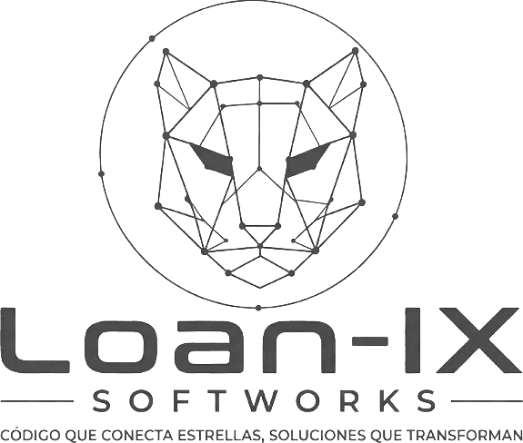

Company information and site credits.
Last updated: October 2026
Galápagos Hook Adventure is a locally owned tour operator based in Puerto Baquerizo Moreno, San Cristóbal, Galápagos, Ecuador, with a secondary office at 12515 Lake Square Cir, Orlando, Florida 32821, United States.

This website is powered and owned by Loan-IX Softworks.
Unless otherwise noted, all content on this site — text, photography and design — is the property of Galápagos Hook Adventure.
Some photographs of Bartolomé Island on this site come from Wikimedia Commons and are used under Creative Commons licenses. They were resized for web use.
This site links to Instagram, TikTok and WhatsApp. We are not responsible for the content or practices of those third-party platforms.
We may update this notice from time to time. Please check back periodically.
Legal inquiries: galahookadventure@outlook.com.